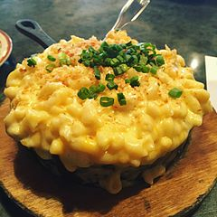

This is my first webpage!
Go see Mac N Cheese
Miles
And I want you to leave.
You are not who I need.
Our loves all pretend.
I could feel this is a trend.
I was better off with your friend.
--Skai Water and Lil Uzi Vert

Facts about Macaroni and Cheese
- Macaroni and cheese (also known as mac and cheese in Canada and the United States and macaroni cheese in the United Kingdom[2]) is a dish of macaroni pasta and a cheese sauce, most commonly cheddar sauce.
- The traditional macaroni and cheese is put in a casserole and baked in the oven; however, it may be prepared in a sauce pan on top of the stove or using a packaged mix.
- It originated from England
- This is true surprisingly
- They usually have terrible food lol
My Source